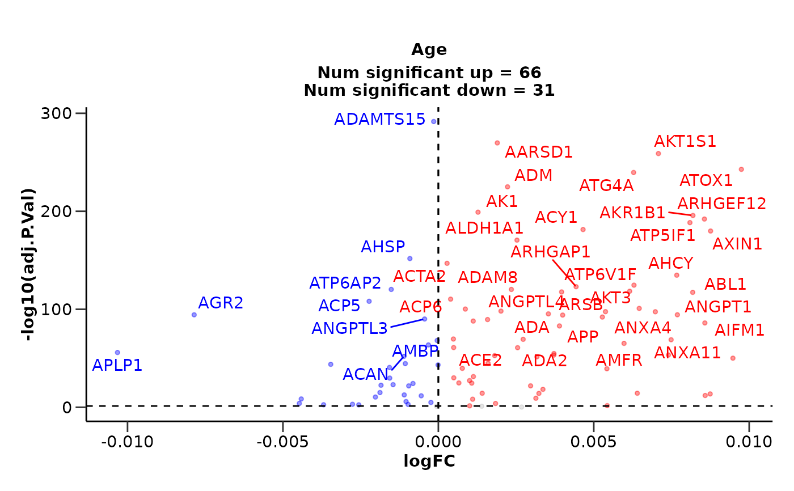

Run differential expression analysis with limma for continuous variable
Source:R/diff_expression.R
do_limma_continuous.RdThis function runs differential expression analysis using limma for a continuous variable. It can generate and save volcano plots.
Usage
do_limma_continuous(
olink_data,
metadata,
variable,
wide = TRUE,
volcano = TRUE,
pval_lim = 0.05,
logfc_lim = 0,
top_up_prot = 40,
top_down_prot = 10,
palette = "diff_exp",
subtitle = TRUE,
save = FALSE
)Arguments
- olink_data
(tibble). A tibble with the Olink data in wide format.
- metadata
(tibble). A tibble with the metadata.
- variable
(character). The variable of interest.
- wide
(logical). If the data is in wide format. Default is TRUE.
- volcano
(logical). Generate volcano plots. Default is TRUE.
- pval_lim
(numeric). The p-value limit for significance. Default is 0.05.
- logfc_lim
(numeric). The logFC limit for significance. Default is 0.
- top_up_prot
(numeric). The number of top up regulated proteins to label on the plot. Default is 40.
- top_down_prot
(numeric). The number of top down regulated proteins to label on the plot. Default is 10.
- palette
(character or vector). The color palette for the plot. If it is a character, it should be one of the palettes from
get_hpa_palettes(). Default is "diff_exp".- subtitle
(logical). If the subtitle should be displayed. Default is TRUE.
- save
(logical). Save the volcano plots. Default is FALSE.
Value
de_results (list). A list with the differential expression results and volcano plots.
de_results: A list with the differential expression results.
volcano_plots: A list with the volcano plots.
Examples
do_limma_continuous(example_data, example_metadata, "Age", wide = FALSE)
#> $de_results
#> # A tibble: 100 × 10
#> Assay logFC CI.L CI.R AveExpr t P.Value adj.P.Val B sig
#> <chr> <dbl> <dbl> <dbl> <dbl> <dbl> <dbl> <dbl> <dbl> <chr>
#> 1 AKT1S1 0.0513 0.0497 0.0529 3.47 62.4 2.87e-254 2.87e-252 572. signif…
#> 2 ADAMTS15 0.0435 0.0420 0.0449 2.99 59.0 9.94e-243 4.97e-241 545. signif…
#> 3 AARSD1 0.0459 0.0443 0.0475 3.13 55.5 5.93e-230 1.98e-228 516. signif…
#> 4 ATOX1 0.0439 0.0424 0.0455 2.97 54.5 2.33e-228 5.83e-227 512. signif…
#> 5 ATG4A 0.0373 0.0360 0.0387 2.55 54.4 1.50e-226 3.00e-225 508. signif…
#> 6 ADM 0.0273 0.0263 0.0284 1.87 49.7 1.45e-211 2.42e-210 473. signif…
#> 7 AKR1B1 0.0339 0.0324 0.0354 2.29 44.3 6.18e-186 8.82e-185 414. signif…
#> 8 AK1 0.0344 0.0328 0.0359 2.34 43.5 1.36e-183 1.70e-182 409. signif…
#> 9 ARHGEF12 0.0477 0.0455 0.0498 3.26 43.2 2.20e-181 2.44e-180 404. signif…
#> 10 ACY1 0.0305 0.0291 0.0319 2.10 42.2 7.73e-178 7.73e-177 396. signif…
#> # ℹ 90 more rows
#>
#> $volcano_plots
#> Warning: ggrepel: 15 unlabeled data points (too many overlaps). Consider increasing max.overlaps

#>